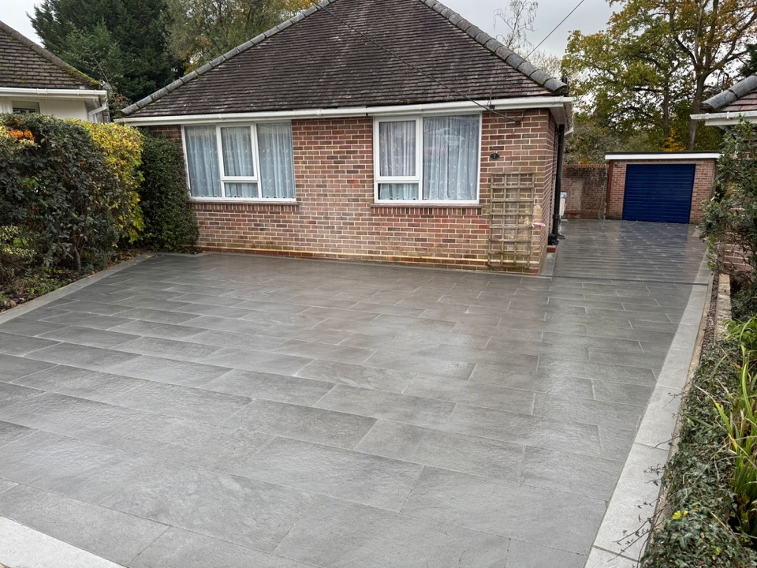
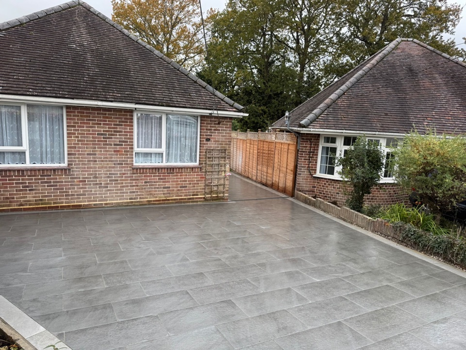
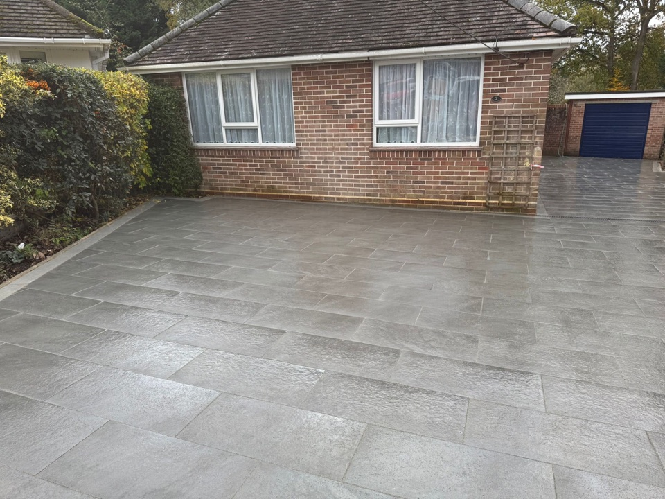
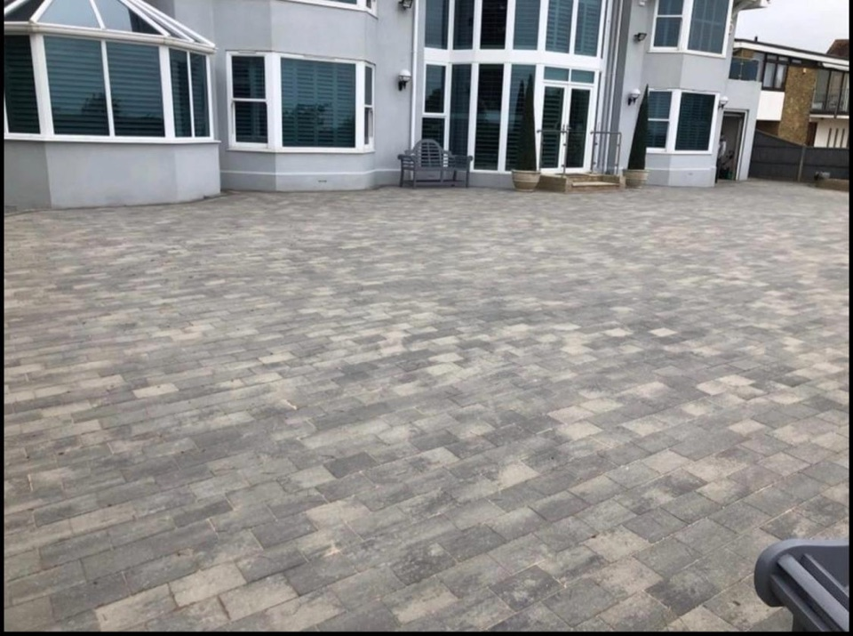
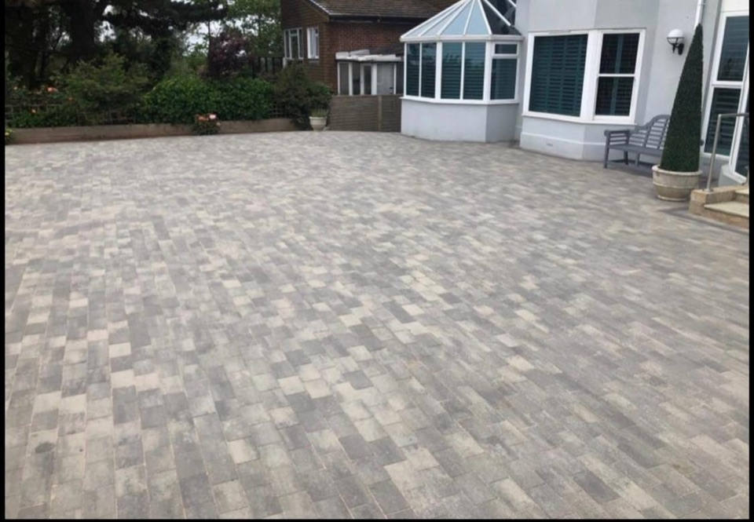
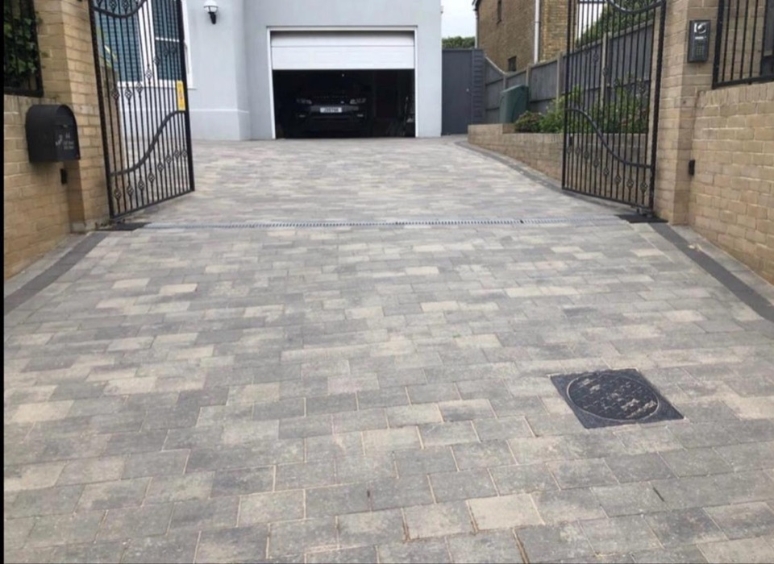
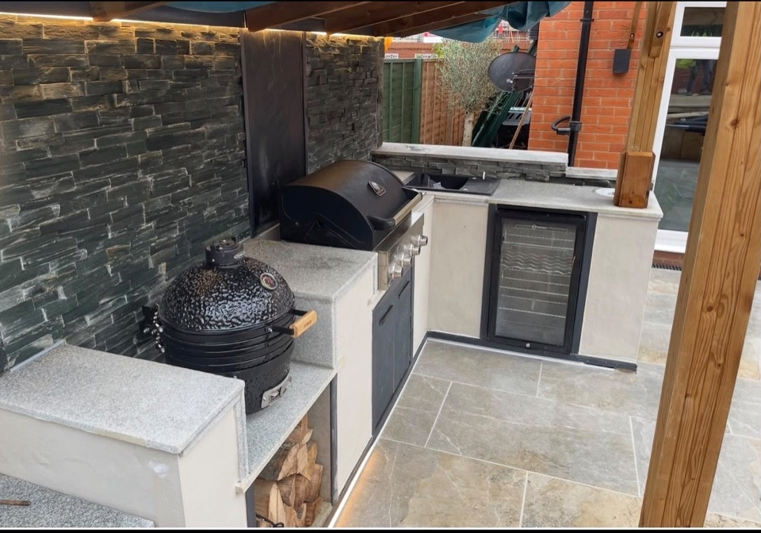
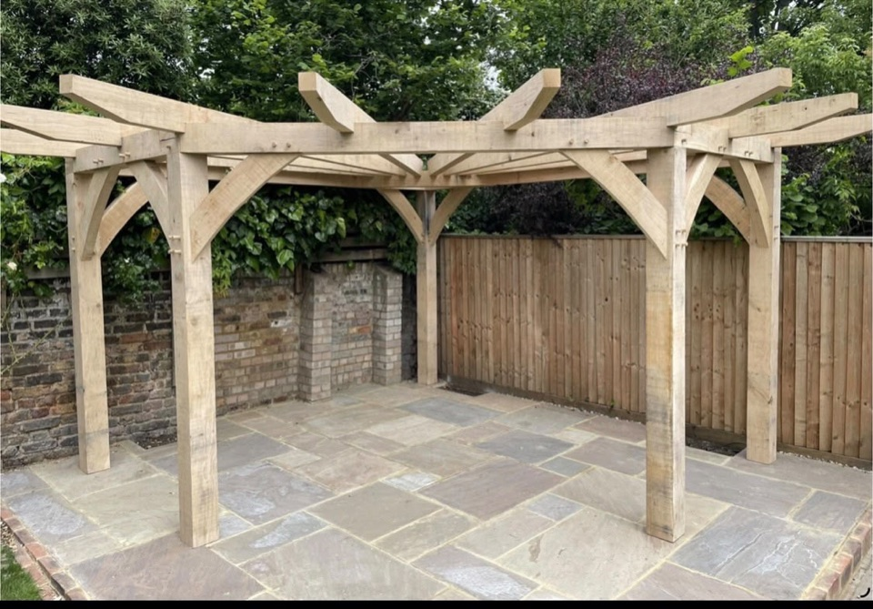
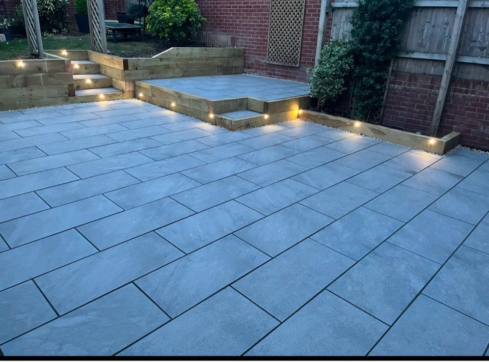

Case Studies
See a few of the stronger completed projects in more detail so you can judge the material choice, layout and finish before you enquire.
Why This Page Exists
Customers usually want proof before they call. This page pulls together project detail from the gallery so you can see the sort of finish Casa4 Developments is delivering on driveways, patios and outdoor living spaces.
Porcelain Driveway With Landscaped Borders



This is the kind of finish customers usually want when they ask for a modern, low-maintenance driveway with stronger kerb appeal. The layout keeps the frontage neat, gives the property a cleaner first impression and pairs the hard surface with planted borders.
Block Paving Courtyard And Driveway Area
This project shows the value of block paving when the space needs to work hard as well as look smart. The courtyard layout, turning space and gate area give the property a more complete frontage and a durable surface that suits everyday use.



Outdoor Living Space With Kitchen And Pergola



The strongest outdoor projects are the ones that feel planned as a single space. This example combines cooking, shelter and seating so the garden works as an actual room rather than just a patio on its own.
Customer Proof
Read the current Google reviews on the verified Casa4 Developments profile, then compare the finished project photos above against the service pages that match your job.